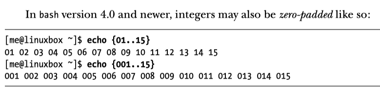
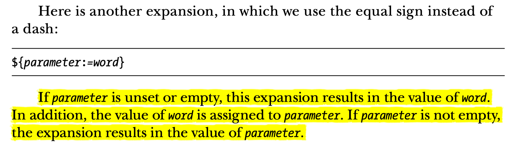
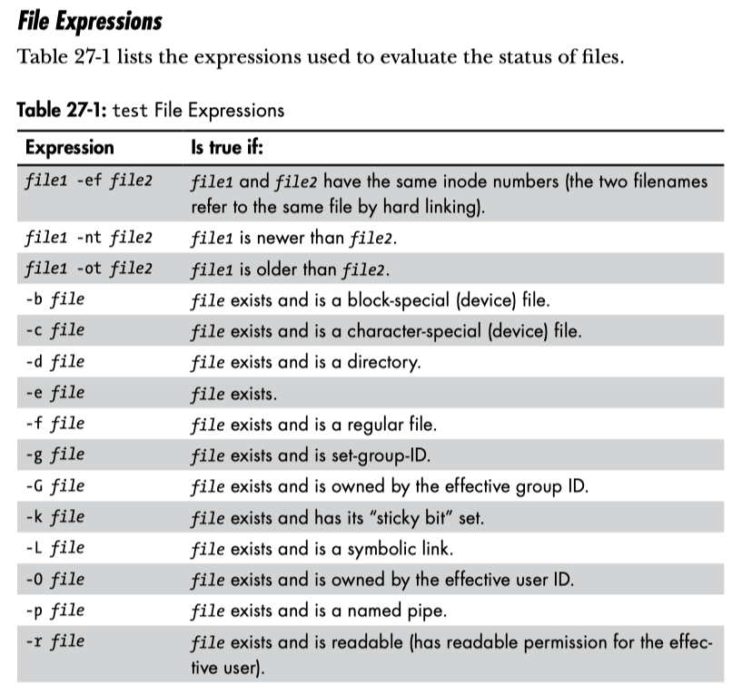
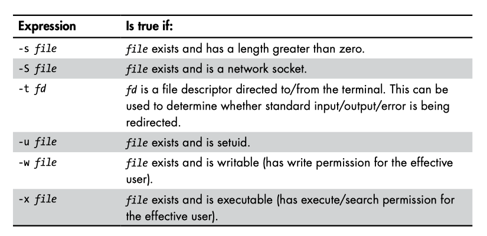
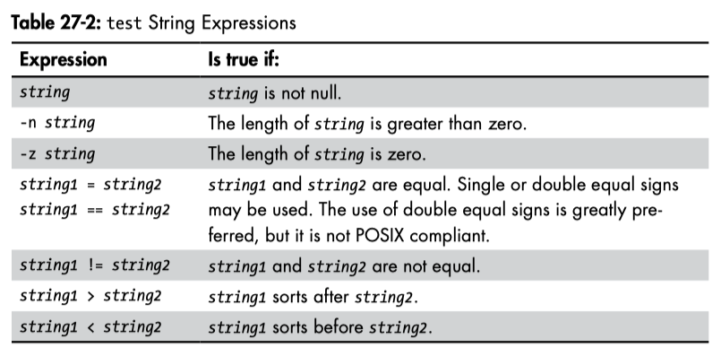
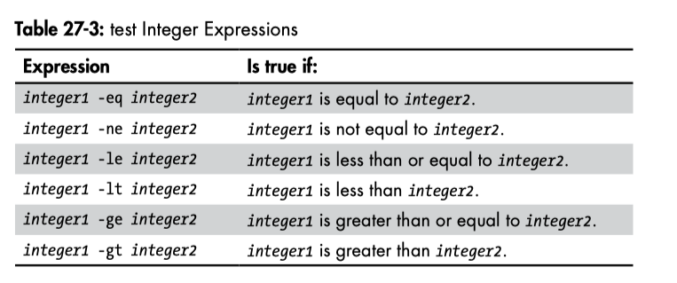
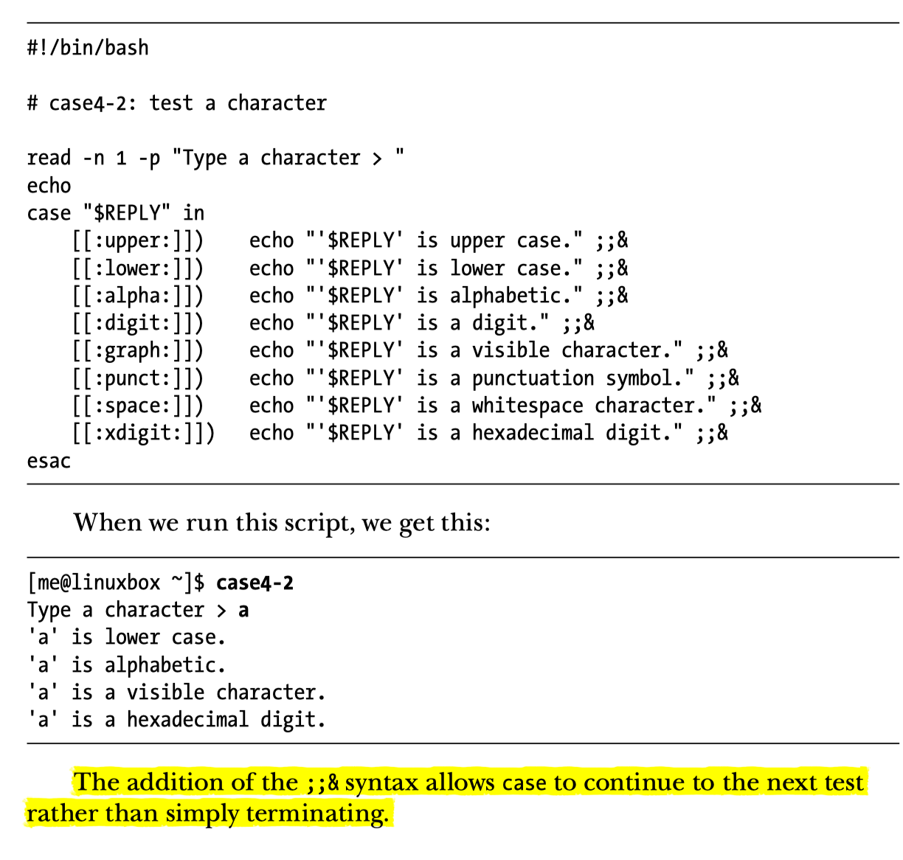
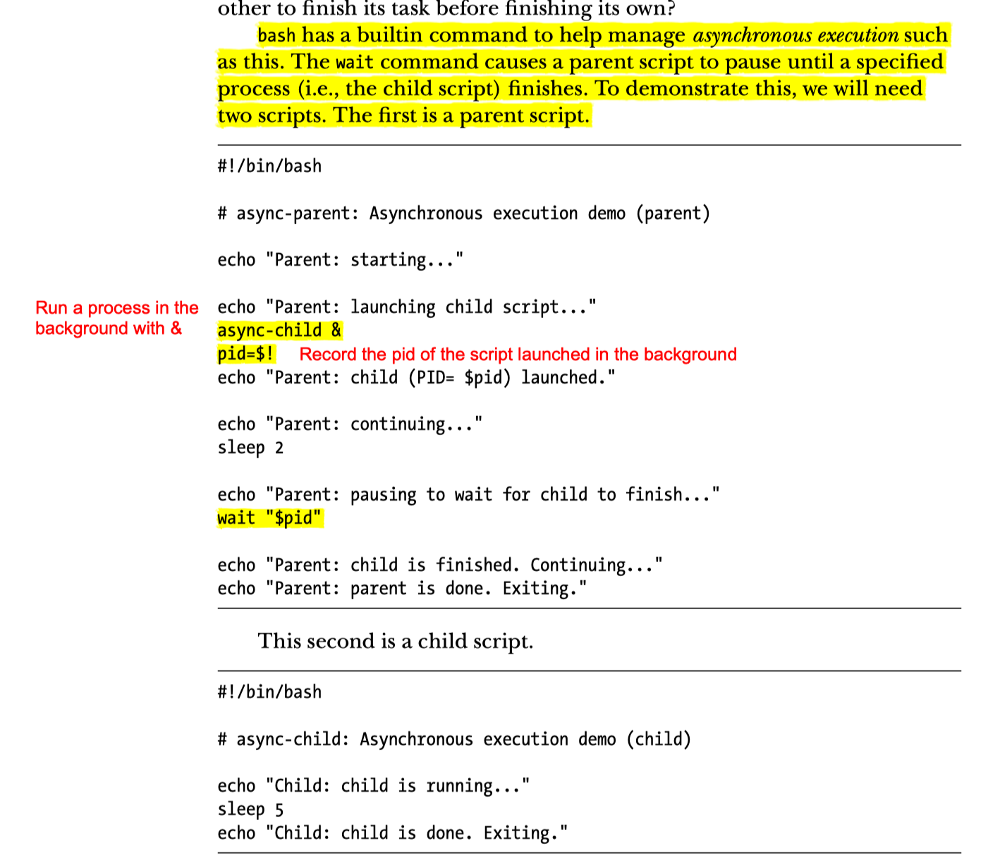
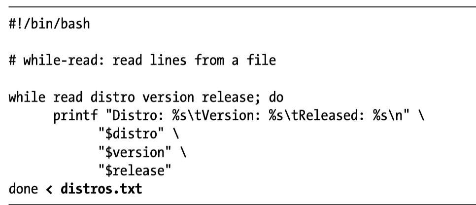

import TOCInline from ‘@theme/TOCInline’;
<TOCInline toc={toc} />;
bin/shls -a ~/ | grep bash
.bash_history
.bash_profile
.bash_profile.backup
.bash_profile.bensherman
.bash_profile_copy
.bash_sessions/
git-completion.bash
.bash_profile: executed when you login -> configures the shell when you get an initial command prompt. This is different than .bashrc.commonly loads the ~/.bashrc file as well.
bin is traditionally the folder for binaries.
bash_profile is designed to run when you login, so if you change it will not refresh until you login next time..bashrc it is executed simply before the command shell comes up, does not have to wait until you login.
etc/bashrc are system bashrc files which is like a “template” for user bashrc files. Anytime a new user is created, it inherits from this template and sometimes automated customizations are applied. This is usually done by simply importing etc/bashrc from each user’s bashrc file.
env will list all env variables.
to apply .bashrc you just have to run the command bash as it will start another shell from your current one. However, if you run bash you can now exit without closing the shell, because a shell is running inside another shell.
~/.bash_history contains lots of history. By default will only capture last 100 but you can change this setting.ignorespaceHIST_CONTROL can be used to control how much history to keep and settings about what should not be logged. One way to turn off loggin is:
export HISTCONTROL=$HISTCONTROL:ignorespace
this allow you to skip logging by adding a space to the the beginning of any command. If you want to see what is in HIST_CONTROL you will see:
> cat ~/.bash_history | grep HISTCONTROL
HISTCONTROL=ignoredups:ignorespace
ignoredups was already set to this variable.
~/.bash_logout will be empty or contain a comment.Common use is to use this to clear out ~/.bashrc with the original to clear out any changes the user may have made. You can accomplish this by copying a backup:
cp ~/.bashrc.original ~/.bashrc
Put your shell scripts in a folder you can find them. We can put them in ~/bin:
> mkdir bin
Make sure in ~/.bash_profile you have:
PATH=$PATH:$HOME/bin
export PATH
test.sh executable run command chmod u+x test.shYou can also run chmod 755
env). > FIRSTNAME="Hamel"
- No space b/w = and value.
- Good idea to __always__ put value in double quotes `"`, although this is not required in every case.
As a practice you want to use export command to set is as an environment variable. This makes the variable available to any subprocess that starts from the shell. Read more about this here.
> export FIRSTNAME
> echo "Hello, $FIRSTNAME"
"Hello Hamel"
> export FIRSTNAME="Hamel" # do this in one step
The above example could work without export, too just reinforcing that its a good idea to use this as a habit. You can do this in one step:
> export TODAYSDATE=`date` # executes date command
```bash
MYUSERNAME='hamel'
MYPASSWORD='password'
STARTOFSCRIPT=`date`
echo "My login name for this app is $MYUSERNAME"
echo "My login password for this app is $MYPASSWORD"
echo "I started this script at $STARTOFSCRIPT"
ENDOFSCRIPT=`date`
echo "I ended the script at $ENDOFSCRIPT"
```
TODAYSDATE=`date`
USERFILES=`find /home -user user` # find all directories owned by the user "user"
echo "Today's Date: $TODAYSDATE"
echo "All files owned by USER: $USERFILES"
#!/bin/bash
shopt -s expand_aliases
# notice that we don't use backticks here because the command we want to execute is put in ".."
alias TODAY="date"
alias UFILES="find /home -user user"
A=`TODAY` #Executes the command date
B=`UFILES`#Executes the command
echo "With Alias, TODAY is: $A" echo "With Alias, UFILES is: $B"
Value != 0 means something is wrong.
$? command: > ls
> echo $?
0
set -e set -e # means exit the shell if there is an error, don't continue.
expr 1 + 2
expr 2 \* 2 # you have to escape the *
expr \( 2 + 2 \) \* 4 # you must also escape the ( )
env and printenv will tell you your global varsset will give you things from your session. This will also usually contain everything from your global scope. set is a superset of env.
unset : Delete An Environment Variableunset MY_VAR
$ escapes a single character.'..' treats something as a string, escapes the whole thing> echo "\$COL" # this will escape the $
$COL
> echo '$COL' # single quotes escape things, means the literal string
$COL
> echo "$COL" # does not escape anything
250
> echo "The date is: `date`" # command substitution with bacticks
The date is Mon Jul 25
Use dev/null when you want to discard output and don’t want to put in the background. /dev/null is a device, and like everything is a file in linux. Everything you write to dev/null just dissapears.
For example:
#!/bin/bash
#redirect to dev/null example
echo "This is going to the blackhole." >> /dev/null
Note >> (append) or > (overwrite) will work for dev/null, although out of habit in other scenarios it is better to append when unsure using >>.
ls -l /bin/usr 2> ls-error.txt
ls -l /bin/sur > ls-output.txt 2>&1
Shortcut: use &
ls -l /bin/sur &> ls-output.txt
/dev/nullls -l /bin/sur 2> /dev/null
note the backticks and the expr command
echo "Enter Your First Name: "
read FIRSTNAME
echo "Enter Your Last Name"
read LASTNAME
echo "Your Full Name is $FIRSTNAME $LASTNAME"
echo "Enter Your Age: "
read USERAGE
echo "In 10 Years, You will be `expr $USERAGE + 10` years old."
> echo sh{ot,oot,ort}
shot shoot short
> echo st{il,al}l
still stall
> echo "$[ 2 * 2 ]"
4
# set and display var at same time
> echo "${VARNAME:=something}"
something
> echo $VARNAME
something
# will print any environment variable that starts with HO
> echo "${!HO*}"
OME HOSTNAME HOSTTYPE
> echo Hello-{Foo,Bar,Baz}-World
Hello-Foo-World Hello-Bar-World Hello-Baz-World

{parameter:-word}
If parameter is unset (i.e., does not exist) or is empty, this expansion results in the value of word. If parameter is not empty, the expansion results in the value of parameter.

Variables are declared implicitly, and the value will implicitly determine what kind of variable it is. However, it could be useful to explicitly define the type.
# an integer variable
MYVAR=4
# use command substitution
> echo `expr $MYVAR + 5`
9
Show the type of the variable, using decalre -p
MYVAR=4
# this shows you MYVAR is a string
> declare -p MYVAR
declare -- MYVAR="4"
Interpreting the output of declare -p: -- tells you that this variable is not strongly typed and its type has not been declared.
Set the type of the variable, using decalre -i
notice how the value is converted to zero when setting NEWVAR to a string when you have declared it as an integer.
> declare -i NEWVAR=10
> declare -p NEWVAR
declare -i NEWVAR="10"
> NEWVAR="Hello"
> echo $NEWVAR
0
Notice in the output instead of -- we have -i which means this variable is an integer.
> declare -r READONLY="This is a string we cannot overwrite"
> declare -p READONLY
declare -r READONLY="This is a string we cannot overwrite"
The -r in the output confirms this is a readonly variable.
Equivalent to declare -r, using the readonly command:
readonly MYREADONLY="This String"
# declare int variable:
> declare -i NEWVAR=10
# inpsect type of NEWVAR
> declare -p NEWVAR
declare -i NEWVAR="10"
# declare readonly variable
> declare -r READONLY="This is something we cannot overwrite"
# try to cancel READONLY type
> declare +r READONLY
### will result in an error
Variables in bash are implicitly typed, the type will be inferred from the value you assign.
declare -p $MYVAR declare -i NEWVAR=10
0.Indexing starts at zero. Notice that arrays are space-delimited., this is a strange thing if you are used to arrays w/commas.
You can have spaces in values if you enclose the spaces in double-quotes.
# notice no commas just spaces!
> MYARRAY=(“First” “Second” “Third”)
> echo ${MYARRAY[2]}
“Third”
#!/bin/bash
# simple array list and loop for display
SERVERLIST=(“websrv01” “websrv02” “websrv03”)
COUNT=0
for INDEX in ${SERVERLIST[@]}; do
echo “Processing Server: ${SERVERLIST[COUNT]}”
COUNT=“`expr $COUNT + 1 `”
done
You cannot decrease the size of the array, you can only increase the size of the array.
echo “The following item was passed to the script at run time $1”
The arguments go from 1-n (starts at 1).
if you have an argument that contains a space, then you wan to enclose this in quotes, otherwhise space is seen as a delimiter.
3
echo “Guess the Secret Number”
echo “======================“
echo “”
echo “Enter a Number Between 1 and 5”
read GUESS
if [ $GUESS -eq 3 ]
then
echo “You guessed the Correct Number!”
fi
Test if a file exists
FILENAME=$1
echo “Testing for the existence of a file called $FILENAME”
if [ -a $FILENAME ]
then
echo “$FILENAME does exist!”
fi
# negation operator
if [! -a $FILENAME ]
then
echo “$FILENAME does not exist!”
fi
# test multiple expressions in if statement
if [ -f $FILENAME ] && [ -R $FILENAME]
then
echo “File $FILENAME exists and is readable.”
fi
-a is the same as -f w.r.t. testing for the existence of a file.
echo “Enter a number between 1 and 3:”
read VALUE
# use semicolons for readability
if [ “$VALUE” -eq “1” ]; then
echo “You entered $VALUE”
fi
Using an OR statement:
# another variation
if [ “$VALUE” -eq “1” ] || [ “$VALUE” -eq “2” ] || [ “$VALUE” -eq “3” ]; then
echo “You entered $VALUE”
else
echo “You didn’t follow directions!”
fi
Redirect errors to /dev/null
if [ “$VALUE” -eq “1” ] 2>/dev/null || [ “$VALUE” -eq “2” ] 2>/dev/null || [ “$VALUE” -eq “3” ] 2>/dev/null; then
echo “You entered $VALUE”
else
echo “You didn’t follow directions!”
fi
if [ “$VALUE” -eq “1” ] 2>/dev/null; then
echo “You entered #1”
elif “ "$VAL”E" -e“ ”2" ] 2>/dev/null; then
ech“ "You entered ”2"
elif “ "$VAL”E" -e“ ”3" ] 2>/dev/null; then
ech“ "You entered ”3"
else
ech“ "You di’n't follow direction”!"
fi
Hamel’s Note: Use Double Brackets [[ ]], not single brackets




https://askubuntu.com/questions/625224/how-to-redirect-stderr-to-a-file
1: stdout
2: stderr
error messages are printed to standard error. The classic redirection operator (command > file) only redirects standard output, so standard error is still shown on the terminal. To redirect stderr as well, you have a few choices:
# Redirect stdout to one file and stderr to another file:
command > out 2>error
# Redirect stderr to stdout (&1), and then redirect stdout to a file:
command >out 2>&1
# Redirect both to a file (this isn’t supported by all shells, bash and zsh support it, for example, but sh and ksh do not)
command &> out
break exits the loopcontinue goes to next iteration in loopuntil is opposite of while#!/bin/bash
echo “List all the shell scripts contents of the directory”
SHELLSCRIPTS=`ls *.sh`
# alternate using for loop
for FILE in *.sh; do
echo “$FILE”
done
#!/bin/bash
echo “1) Choice 2”
echo “2) Choice 2”
echo “3) Choice 3”
echo “Enter Choice:”
read MENUCHOICE
case $MENUCHOICE in
1)
echo “You have choosen the first option”;;
2)
echo “You have chosen the second option”;;
3)
echo “You have selected the third option”;;
*)
echo “You have choosen unwisely”;;
Allow many matches to occur

#!/bin/bash
echo “Enter number of times to display message:”
read NUM
COUNT=1
# -le means less than or equal to
while [ $COUNT -le $NUM ]
do
echo “Hello World $COUNT”
COUNT=“`expr $COUNT + 1`”
done
wait
This is the most straightforward implementation of async I have ever seen. You basically decide when to block and wait for a process that you previously decided to run in a child process.
command1 && command2:only run command2 if command1 is successful
command1 || command2:only run command2 if command1 fails
the file super duper does not exist
rm superduper 2> /dev/null && echo "File was deleted"
The echo will only execute if the rm command was successful and exits without errors. Therefore, in this case the echo statement will not be triggered.
rm superduper 2> /dev/null && echo "File was deleted" || echo "File does not exit"
| Because of short-circuiting rules, the second statement of the OR | will not trigger unless the left hand side is false. |
&& : and|| : orecho “Enter a filename”
read FILE
while read -r SUPERHERO; do
echo “Superhero Name: $SUPERHERO”
done < “$FILE”

Use a number >= 3 for file descriptors.
0 - stdin 1 - stdout 2 - stderr
/dev/null -> generic place where you can redirect streams into nothing.
#!/bin/bash
echo “Enter file name: “
read FILE
# < means readonly, > means write only, <> means allow read & write
# assign file descriptor to filename
exec 5<>$FILE
while read -r SUPERHERO; do
echo “Superhero Name: $SUPERHERO”
done <&5 #use & to reference the file descriptor
# append to end of file.
echo "File Was Read On: `date`" >&5
# close file descriptor
exec 5>&-
IFS - Internal Field Seperator Default is a space
# this will return a space
echo $IFS
echo "Enter filename to parse: "
read FILE # spacedelim.txt
# https://stackoverflow.com/questions/24337385/bash-preserve-string-with-spaces-input-on-command-line
while read -r CPU MEM DISK; do
echo "CPU: $CPU"
echo "Memory: $MEM"
echo "Disk: $DISK"
done <"$FILE"
https://www.gnu.org/software/libc/manual/html_node/Termination-Signals.html
cntrl+c = SIGINTcntrl+z = SIGTSTPkill command (without -9 flag) = SIGTERMkill -9 = SIGKILL; this signal is not sent to the process, it is just killed.clear
# first argument is what to exexute
trap 'echo " - Please Press Q to Exit."' SIGINT SIGTERM SIGTSTP
# cntrl+c = SIGINT
# cntrl+z = SIGTSTP (Suspend, send to background)
while [ "$CHOICE" != "Q" ] && [ "$CHOICE" != "q" ]; do
echo "Main Menu"
echo "======="
echo "1) Choice One"
echo "2) Choice Two"
echo "3) Choice Three"
echo "Q) Quit"
read CHOICE
clear
done
bash -x will run a shell script in debug mode.
google this to figure out how to interpret output of debugging.
$? contains the status code of the last command.
What if you have the code:
#!/bin/bash
echo "Change to a directory and list the contents"
DIRECTORY="$1"
cd $DIRECTORY
# DANGER: the below command will still run even if the previous command failed!
rm *
Solution:
DIRECTORY="$1"
cd $DIRECTORY
if [ $? -eq "0" ]; then
echo "Changed directory successfully into $DIRECTORY"
else
echo "Cannot change driectories, exiting with error."
exit 111 # you can exit with any code you want!
fi
funcExample () {
echo "We are inside the function"
}
#call the function
funcExample
Unlike python, you must define your functions before you call them.
setting a variable within a function defines that variable globally after that function is called!!!
GLOBALVAR=“Globally Visible”
# sample function for function variable scope
funcExample () {
# local
LOCALVAR=“Locally Visible”
echo “From within the function, the variable’s value is set to $LOCALVAR …”
}
# script start
echo “this happens before the function call”
echo “”
echo “Local Variable = $LOCALVAR after the function call.”
echo “Global Variable = $GLOBALVAR (before the function call).”
funcExample
echo “this happens after the function call”
echo “Local Variable = $LOCALVAR after the function call.”
echo “Global Variable = $GLOBALVAR (before the function call).”
Output of above code:
./scope.sh
this happens before the function call
Local Variable = after the function call.
Global Variable = Globally Visible (before the function call).
From within the function, the variable’s value is set to Locally Visible …
this happens after the function call
Local Variable = Locally Visible after the function call.
Global Variable = Globally Visible (before the function call).
# global
USERNAME=$1
funcAgeInDays () {
echo “Hello $USERNAME, You are $1 Years old.”
echo “That makes you approx `expr 365 \* $1` days old”
}
#script - start
read -r -p “Enter your age:” AGE
# pass in arguments like this
funcAgeInDays $AGE
Author of course uses this for organization purposes. When you call a function if it has nested functions the functions defined within will be exposed to the script also.
# global
GENDER=$1
funcHuman () {
ARMS=2
LEGS=2
funcMale () {
BEARD=1
echo “This man has $ARMS arms and $LEGS legs with $BEARD beard”
}
funcFemale () {
BEARD=0
echo “This woman has $ARMS arms and $LEGS legs with $BEARD beard”
}
}
# script start
clear
# determine the actual gender and display the characteristics.
if [ “$GENDER” == “male” ]; then
funcHuman
funcMale # this function is available after the parent function is called.
else
funcHuman
funcFemale
fi
This allows you to get arguments from the command line and then exit with a proper code and also use function returns inside scripts.
# demo of return values and testing results
YES=0
NO=1
FIRST=$1
SECOND=$2
THIRD=$3
# function definitions
funcCheckParams () {
# did we get three
# -z equivalent to isnull (in this case means not-null b/c of !)
if [ ! -z “$THIRD” ]; then
echo “We got three params”
return $YES
else
echo “We did not get three params”
return $NO
fi
}
# script start
funcCheckParams
# the return value from the function gets stored in $?
RETURN_VALS=$?
if [ “$RETURN_VALS” -eq “$YES” ]; then
echo “We received three params and they are:”
echo “Param 1: $FIRST”
echo “Param 2: $SECOND”
echo “Param 3: $THIRD”
else
echo “Usage: funcreturn.sh [param1] [param2] [param3]”
exit 1
fi
Dissappears unless you sleep (see below). Does not come with any buttons.
# globals
INFOBOX=${INFOBOX=dialog}
TITLE=“Default”
MESSAGE=“Something to say”
XCOORD=10
YCOORD=20
funcDisplayInfoBox () {
$INFOBOX —title “$1” —infobox “$2” “$3” “$4”
sleep “$5”
}
Msgbox - dissapears unless you sleep pass --msgbox argument, comes with default ok button and stays on screen.
# global
MSGBOX=${MSGBOX=dialog}
TITLE=“Default”
MESSAGE=“Some Message”
XCOORD=10
YCOORD=20
funcDisplayMsgBox () {
$MSGBOX —title “$1” —msgbox “$2” “$3” “$4”
}
See pdf notes/scripts